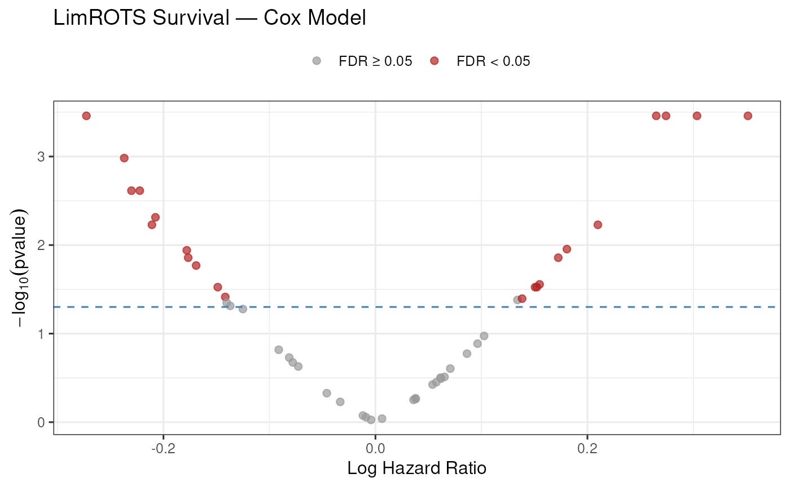
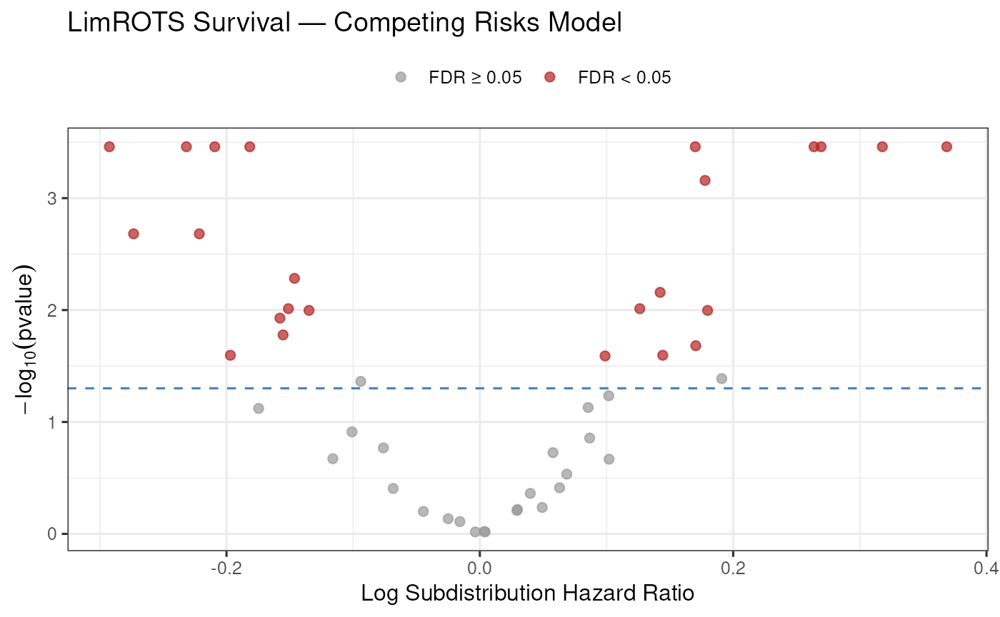
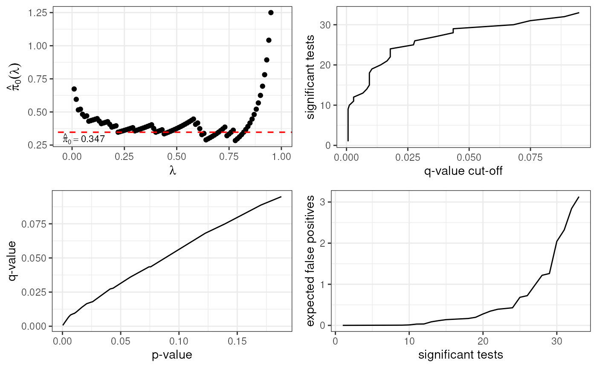
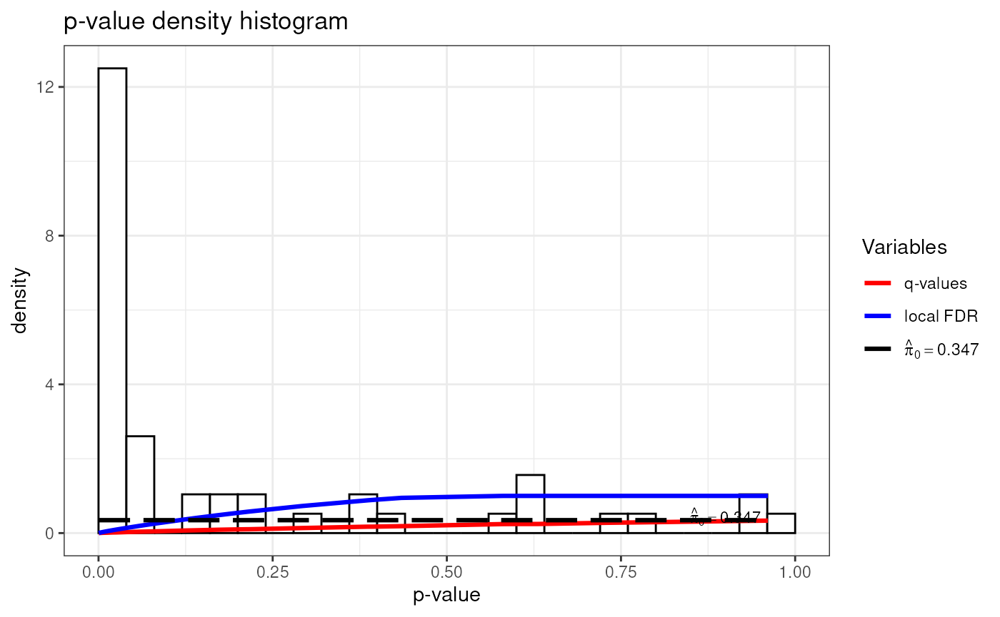

vignettes/LimROTS_survival.Rmd
LimROTS_survival.RmdLimROTS extends its reproducibility-optimized testing framework to
survival analysis via the LimROTS_survival() function. It
fits a Cox proportional hazards model Therneau
(2024) — or, optionally, a competing risks model via the
Fine–Gray subdistribution approach Gray
(2024) — per feature across bootstrap resamples. The
reproducibility-optimization step then selects the parameters
and
that maximize the overlap of top-ranked features over those resamples,
yielding:
where is the Cox model coefficient (log hazard ratio) and is its standard error for feature .
P-values are derived from permutation-based null distributions using
the qvalue package Storey et al.
(2024). This vignette demonstrates both models using a Crohn’s
disease gut microbiome dataset.
If you use LimROTS in your research, please cite:
Anwar, A. M., Jeba, A., Lahti, L., & Coffey, E. (2025). LimROTS: A Hybrid Method Integrating Empirical Bayes and Reproducibility-Optimized Statistics for Robust Differential Expression Analysis. Bioinformatics, btaf570. https://doi.org/10.1093/bioinformatics/btaf570
We use the crohn_survival dataset from the
miaTime package Lahti et al.
(2024). This is a simulated dataset based on a real Crohn’s
disease microbiome study (Gevers et al. 2014; Calle et
al. 2023). It contains 150 individuals
and 48 gut microbial taxa stored as a
TreeSummarizedExperiment object.
The relevant colData columns are:
| Column | Description |
|---|---|
diagnosis |
Group label ("CD" = Crohn’s disease,
"Control") |
event |
Binary event indicator (1 = Crohn’s disease, 0 = censored) |
event_time |
Time to event or censoring (unitless) |
The analysis goal is to identify taxa whose abundance is associated with time to Crohn’s disease diagnosis.
library(LimROTS, quietly = TRUE)
library(mia, quietly = TRUE)
library(miaTime, quietly = TRUE)
library(TreeSummarizedExperiment, quietly = TRUE)
library(BiocParallel, quietly = TRUE)
library(SummarizedExperiment, quietly = TRUE)
library(ggplot2, quietly = TRUE)
data("crohn_survival")
print(crohn_survival)
#> class: TreeSummarizedExperiment
#> dim: 48 150
#> metadata(0):
#> assays(1): counts
#> rownames(48): g__Turicibacter g__Parabacteroides ...
#> f__Rikenellaceae_g__ g__Bilophila
#> rowData names(4): order family genus taxonomy_id
#> colnames(150): 1939.SKBTI.0678 1939.SKBTI.0516 ... 1939.SKBTI.0237
#> 1939.SKBTI.0253.a
#> colData names(4): sample_id event event_time diagnosis
#> reducedDimNames(0):
#> mainExpName: NULL
#> altExpNames(0):
#> rowLinks: NULL
#> rowTree: NULL
#> colLinks: NULL
#> colTree: NULLcrohn_survival is a
TreeSummarizedExperiment. We first apply the centered
log-ratio (CLR) transformation using mia::transformAssay(),
which stores the result as a named assay ("clr") alongside
the original counts. We then coerce to a plain
SummarizedExperiment as required by
LimROTS_survival():
crohn_survival <- transformAssay(
crohn_survival,
assay.type = "counts",
method = "clr",
pseudocount = TRUE,
name = "clr"
)
#> The assay contains already only strictly positive values. It is not recommended to add pseudocountin such case. To force adding pseudocount you canprovide a numeric value for the pseudocount argument.
assayNames(crohn_survival)
#> [1] "counts" "clr"
taxa_names <- rownames(crohn_survival)
crohn_survival <- as(crohn_survival, "SummarizedExperiment")
# as() coercion can drop rownames; restore them
if (is.null(rownames(crohn_survival))) {
rownames(crohn_survival) <- taxa_names
}
print(crohn_survival)
#> class: SummarizedExperiment
#> dim: 48 150
#> metadata(0):
#> assays(2): counts clr
#> rownames(48): g__Turicibacter g__Parabacteroides ...
#> f__Rikenellaceae_g__ g__Bilophila
#> rowData names(0):
#> colnames(150): 1939.SKBTI.0678 1939.SKBTI.0516 ... 1939.SKBTI.0237
#> 1939.SKBTI.0253.a
#> colData names(4): sample_id event event_time diagnosisSample names in crohn_survival contain .
characters, which can cause issues in formula parsing. We replace them
with _ in both the assay column names and the
colData row names:
clean_names <- gsub("\\.", "_", colnames(crohn_survival))
colnames(crohn_survival) <- clean_names
rownames(colData(crohn_survival)) <- clean_names
# Rename event_time -> time as required by LimROTS_survival()
colnames(colData(crohn_survival))[
colnames(colData(crohn_survival)) == "event_time"] <- "time"Inspect the survival outcome distribution:
The standard Cox model tests each taxon for an association with time-to-event independently of any other covariates.
LimROTS_survival
set.seed(1234, kind = "default", sample.kind = "default")
crohn_cox <- LimROTS_survival(
x = crohn_survival,
assay.type = "clr",
niter = 30, # use >= 1000 for real analyses
K = 10, # number of top taxa
meta.info = c("time", "event"),
formula.str = "~ Surv(time, event)",
competing_risks = FALSE,
verbose = FALSE
)
#> Data is SummarizedExperiment object
#> Assay: clr will be used
#> Sanity check completed successfully!
#> Using MulticoreParam (Unix-like OS) with two workers.
#> qvalue() failed (return NULL): missing values and NaN's not allowed if 'na.rm' is FALSENote:
niter = 30is used here to reduce build time. For production analyses, useniter = 1000or higher and increase the number of parallel workers via theBPPARAMargument:# Windows BPPARAM <- SnowParam(workers = 4) # Linux / macOS BPPARAM <- MulticoreParam(workers = 4) # Pass to LimROTS_survival(..., BPPARAM = BPPARAM)
The results are appended to the rowData and
metadata slots of the returned
SummarizedExperiment.
cox_res <- data.frame(
rowData(crohn_cox),
row.names = rownames(crohn_cox)
)
head(cox_res[order(cox_res$pvalue), ])
#> statistics pvalue qvalue FDR exp_coef BH.pvalue
#> g__Actinomyces 0.4097402 0.0003472222 NA 0 1.4211011 0.003333333
#> f__Gemellaceae_g__ 0.3184780 0.0003472222 NA 0 1.3033357 0.003333333
#> g__Lachnospira 0.3245194 0.0003472222 NA 0 0.7613151 0.003333333
#> g__Granulicatella 0.3266076 0.0003472222 NA 0 1.3154138 0.003333333
#> g__Streptococcus 0.3690089 0.0003472222 NA 0 1.3544171 0.003333333
#> o__Clostridiales_g__ 0.2836266 0.0010416667 NA 0 0.7889692 0.008333333Volcano plot of log hazard ratios versus (q-value):
cox_res$significant <- cox_res$FDR < 0.05
ggplot(cox_res, aes(
x = log(exp_coef),
y = -log10(pvalue),
color = significant
)) +
geom_point(alpha = 0.7, size = 2) +
geom_hline(
yintercept = -log10(0.05),
linetype = "dashed",
color = "steelblue"
) +
scale_color_manual(
values = c("FALSE" = "grey60", "TRUE" = "firebrick"),
labels = c("FALSE" = "FDR \u2265 0.05", "TRUE" = "FDR < 0.05")
) +
labs(
title = "LimROTS Survival \u2014 Cox Model",
x = "Log Hazard Ratio",
y = expression(-log[10](pvalue)),
color = NULL
) +
theme_bw(base_size = 12) +
theme(legend.position = "top")
When a competing event (e.g., death from another cause, remission)
prevents the event of interest from occurring, a competing risks model
is more appropriate than the standard Cox model.
LimROTS_survival() supports the Fine–Gray subdistribution
hazard model Gray (2024) when
competing_risks = TRUE.
The event variable must be coded as:
The crohn_survival dataset has a binary event column
(0/1). For illustration, we recode half of the censored observations as
having experienced a competing event:
crohn_cr <- crohn_survival
event_vec <- colData(crohn_cr)$event
censored_idx <- which(event_vec == 0)
set.seed(42)
competing_idx <- sample(censored_idx, floor(length(censored_idx) / 2))
event_vec[competing_idx] <- 2L
colData(crohn_cr)$event <- event_vec
table(colData(crohn_cr)$event)
#>
#> 0 1 2
#> 38 75 37Note: In a real study, the competing event column should reflect a genuine competing risk recorded in the original data (e.g., surgical intervention, withdrawal). The recoding above is purely for demonstration purposes.
LimROTS_survival
set.seed(1234, kind = "default", sample.kind = "default")
crohn_cr <- LimROTS_survival(
x = crohn_cr,
assay.type = "clr",
niter = 30,
K = 10,
meta.info = c("time", "event"),
formula.str = "~ Surv(time, event)",
competing_risks = TRUE,
verbose = FALSE
)
#> Data is SummarizedExperiment object
#> Assay: clr will be used
#> Sanity check completed successfully!
#> Using MulticoreParam (Unix-like OS) with two workers.
cr_res <- data.frame(
rowData(crohn_cr),
row.names = rownames(crohn_cr)
)
head(cr_res[order(cr_res$pvalue), ])
#> statistics pvalue qvalue FDR exp_coef
#> g__Bacteroides 4.019771 0.0003472222 0.0006430041 0 0.8111478
#> g__Faecalibacterium 3.753486 0.0003472222 0.0006430041 0 0.8339016
#> g__Dialister 3.815381 0.0003472222 0.0006430041 0 1.1853826
#> g__Actinomyces 3.580579 0.0003472222 0.0006430041 0 1.4457244
#> f__Gemellaceae_g__ 4.347935 0.0003472222 0.0006430041 0 1.3092273
#> g__Roseburia 3.941297 0.0003472222 0.0006430041 0 0.7931892
#> BH.pvalue
#> g__Bacteroides 0.001851852
#> g__Faecalibacterium 0.001851852
#> g__Dialister 0.001851852
#> g__Actinomyces 0.001851852
#> f__Gemellaceae_g__ 0.001851852
#> g__Roseburia 0.001851852Volcano plot for the competing risks model:
cr_res$significant <- cr_res$FDR < 0.05
ggplot(cr_res, aes(
x = log(exp_coef),
y = -log10(pvalue),
color = significant
)) +
geom_point(alpha = 0.7, size = 2) +
geom_hline(
yintercept = -log10(0.05),
linetype = "dashed",
color = "steelblue"
) +
scale_color_manual(
values = c("FALSE" = "grey60", "TRUE" = "firebrick"),
labels = c("FALSE" = "FDR \u2265 0.05", "TRUE" = "FDR < 0.05")
) +
labs(
title = "LimROTS Survival \u2014 Competing Risks Model",
x = "Log Subdistribution Hazard Ratio",
y = expression(-log[10](pvalue)),
color = NULL
) +
theme_bw(base_size = 12) +
theme(legend.position = "top")


sessionInfo()
#> R version 4.6.0 (2026-04-24)
#> Platform: x86_64-pc-linux-gnu
#> Running under: Ubuntu 24.04.4 LTS
#>
#> Matrix products: default
#> BLAS: /usr/lib/x86_64-linux-gnu/openblas-pthread/libblas.so.3
#> LAPACK: /usr/lib/x86_64-linux-gnu/openblas-pthread/libopenblasp-r0.3.26.so; LAPACK version 3.12.0
#>
#> locale:
#> [1] LC_CTYPE=en_US.UTF-8 LC_NUMERIC=C
#> [3] LC_TIME=en_US.UTF-8 LC_COLLATE=en_US.UTF-8
#> [5] LC_MONETARY=en_US.UTF-8 LC_MESSAGES=en_US.UTF-8
#> [7] LC_PAPER=en_US.UTF-8 LC_NAME=C
#> [9] LC_ADDRESS=C LC_TELEPHONE=C
#> [11] LC_MEASUREMENT=en_US.UTF-8 LC_IDENTIFICATION=C
#>
#> time zone: UTC
#> tzcode source: system (glibc)
#>
#> attached base packages:
#> [1] stats4 stats graphics grDevices utils datasets methods
#> [8] base
#>
#> other attached packages:
#> [1] ggplot2_4.0.3 BiocParallel_1.45.0
#> [3] miaTime_1.2.0 mia_1.20.0
#> [5] TreeSummarizedExperiment_2.20.0 Biostrings_2.80.0
#> [7] XVector_0.52.0 SingleCellExperiment_1.34.0
#> [9] MultiAssayExperiment_1.38.0 LimROTS_1.3.25
#> [11] SummarizedExperiment_1.42.0 Biobase_2.72.0
#> [13] GenomicRanges_1.64.0 Seqinfo_1.2.0
#> [15] IRanges_2.46.0 S4Vectors_0.50.0
#> [17] BiocGenerics_0.58.0 generics_0.1.4
#> [19] MatrixGenerics_1.24.0 matrixStats_1.5.0
#> [21] BiocStyle_2.40.0
#>
#> loaded via a namespace (and not attached):
#> [1] RColorBrewer_1.1-3 jsonlite_2.0.0
#> [3] magrittr_2.0.5 ggbeeswarm_0.7.3
#> [5] farver_2.1.2 nloptr_2.2.1
#> [7] rmarkdown_2.31 fs_2.1.0
#> [9] ragg_1.5.2 vctrs_0.7.3
#> [11] DelayedMatrixStats_1.34.0 minqa_1.2.8
#> [13] htmltools_0.5.9 S4Arrays_1.12.0
#> [15] BiocNeighbors_2.6.0 broom_1.0.12
#> [17] SparseArray_1.12.0 variancePartition_1.42.0
#> [19] sass_0.4.10 KernSmooth_2.23-26
#> [21] bslib_0.10.0 htmlwidgets_1.6.4
#> [23] desc_1.4.3 DECIPHER_3.8.0
#> [25] pbkrtest_0.5.5 plyr_1.8.9
#> [27] cachem_1.1.0 igraph_2.3.0
#> [29] lifecycle_1.0.5 cmprsk_2.2-12
#> [31] iterators_1.0.14 pkgconfig_2.0.3
#> [33] rsvd_1.0.5 Matrix_1.7-5
#> [35] R6_2.6.1 fastmap_1.2.0
#> [37] rbibutils_2.4.1 digest_0.6.39
#> [39] numDeriv_2016.8-1.1 scater_1.40.0
#> [41] irlba_2.3.7 textshaping_1.0.5
#> [43] vegan_2.7-3 beachmat_2.28.0
#> [45] labeling_0.4.3 mgcv_1.9-4
#> [47] abind_1.4-8 compiler_4.6.0
#> [49] withr_3.0.2 aod_1.3.3
#> [51] S7_0.2.2 backports_1.5.1
#> [53] DBI_1.3.0 viridis_0.6.5
#> [55] gplots_3.3.0 MASS_7.3-65
#> [57] rappdirs_0.3.4 DelayedArray_0.38.0
#> [59] bluster_1.22.0 corpcor_1.6.10
#> [61] permute_0.9-10 gtools_3.9.5
#> [63] caTools_1.18.3 tools_4.6.0
#> [65] vipor_0.4.7 otel_0.2.0
#> [67] beeswarm_0.4.0 ape_5.8-1
#> [69] remaCor_0.0.20 glue_1.8.1
#> [71] nlme_3.1-169 grid_4.6.0
#> [73] cluster_2.1.8.2 reshape2_1.4.5
#> [75] gtable_0.3.6 tidyr_1.3.2
#> [77] BiocSingular_1.28.0 ScaledMatrix_1.20.0
#> [79] ggrepel_0.9.8 pillar_1.11.1
#> [81] stringr_1.6.0 yulab.utils_0.2.4
#> [83] limma_3.68.0 splines_4.6.0
#> [85] dplyr_1.2.1 treeio_1.36.0
#> [87] lattice_0.22-9 survival_3.8-6
#> [89] DirichletMultinomial_1.54.0 tidyselect_1.2.1
#> [91] scuttle_1.22.0 knitr_1.51
#> [93] gridExtra_2.3 reformulas_0.4.4
#> [95] bookdown_0.46 RhpcBLASctl_0.23-42
#> [97] xfun_0.57 statmod_1.5.1
#> [99] stringi_1.8.7 lazyeval_0.2.3
#> [101] yaml_2.3.12 boot_1.3-32
#> [103] evaluate_1.0.5 codetools_0.2-20
#> [105] tibble_3.3.1 qvalue_2.44.0
#> [107] BiocManager_1.30.27 cli_3.6.6
#> [109] systemfonts_1.3.2 Rdpack_2.6.6
#> [111] jquerylib_0.1.4 Rcpp_1.1.1-1.1
#> [113] EnvStats_3.1.0 parallel_4.6.0
#> [115] pkgdown_2.2.0 ecodive_2.2.6
#> [117] sparseMatrixStats_1.24.0 bitops_1.0-9
#> [119] lme4_2.0-1 decontam_1.32.0
#> [121] viridisLite_0.4.3 mvtnorm_1.3-7
#> [123] tidytree_0.4.7 lmerTest_3.2-1
#> [125] scales_1.4.0 purrr_1.2.2
#> [127] crayon_1.5.3 fANCOVA_0.6-1
#> [129] rlang_1.2.0